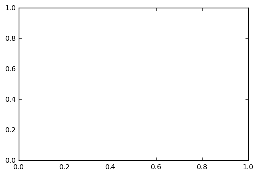
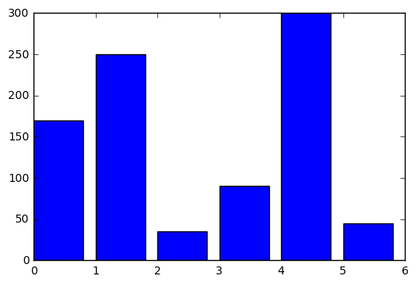
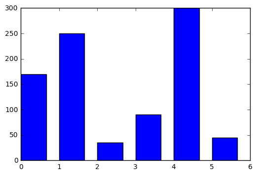
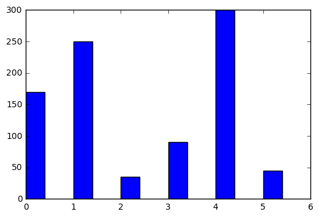
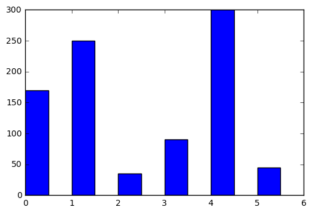
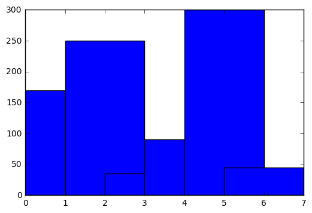
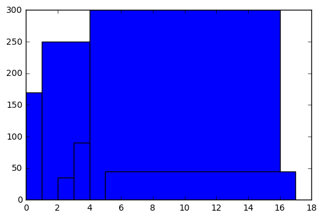
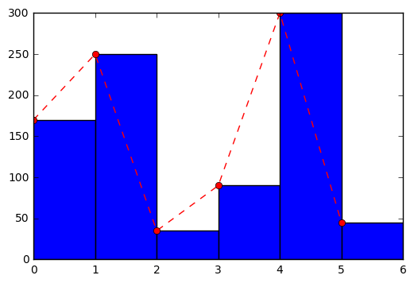
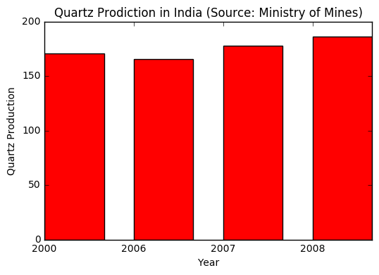

Jupyter QtConsole 4.2.1
Python 3.5.2 |Anaconda 4.2.0 (64-bit)| (default, Jul 5 2016, 11:41:13) [MSC v.1900 64 bit (AMD64)]
Type "copyright", "credits" or "license" for more information.
IPython 5.1.0 -- An enhanced Interactive Python.
? -> Introduction and overview of IPython's features.
%quickref -> Quick reference.
help -> Python's own help system.
object? -> Details about 'object', use 'object??' for extra details.
In [1]: import matplotlib.pyplot as plt
In [2]: %matplotlib inline
In [3]: q = [170,250,35,90,300,45]
In [4]: x = [0,1,2,3,4,5,6]
In [5]: plt.bar(x,y)
---------------------------------------------------------------------------
NameError Traceback (most recent call last)
<ipython-input-5-360baabda064> in <module>()
----> 1 plt.bar(x,y)
NameError: name 'y' is not defined
In [6]: plt.bar(x,q)

---------------------------------------------------------------------------
ValueError Traceback (most recent call last)
<ipython-input-6-679a126e11b6> in <module>()
----> 1 plt.bar(x,q)
C:\Users\azazel\Anaconda\lib\site-packages\matplotlib\pyplot.py in bar(left, height, width, bottom, hold, data, **kwargs)
2648 try:
2649 ret = ax.bar(left, height, width=width, bottom=bottom, data=data,
-> 2650 **kwargs)
2651 finally:
2652 ax.hold(washold)
C:\Users\azazel\Anaconda\lib\site-packages\matplotlib\__init__.py in inner(ax, *args, **kwargs)
1816 warnings.warn(msg % (label_namer, func.__name__),
1817 RuntimeWarning, stacklevel=2)
-> 1818 return func(ax, *args, **kwargs)
1819 pre_doc = inner.__doc__
1820 if pre_doc is None:
C:\Users\azazel\Anaconda\lib\site-packages\matplotlib\axes\_axes.py in bar(self, left, height, width, bottom, **kwargs)
2036 if len(height) != nbars:
2037 raise ValueError("incompatible sizes: argument 'height' "
-> 2038 "must be length %d or scalar" % nbars)
2039 if len(width) != nbars:
2040 raise ValueError("incompatible sizes: argument 'width' "
ValueError: incompatible sizes: argument 'height' must be length 7 or scalar
In [7]: x = [0,1,2,3,4,5]
In [8]: plt.bar(x,q)
Out[8]: <Container object of 6 artists>

In [9]: plt.bar(x,q, 1/1.5)
Out[9]: <Container object of 6 artists>

In [10]: plt.bar(x,q, 1/2.5)
Out[10]: <Container object of 6 artists>

In [11]: plt.bar(x,q, 1/2)
Out[11]: <Container object of 6 artists>

In [12]: plt.bar(x,q, 2)
Out[12]: <Container object of 6 artists>

In [13]: plt.bar(x,q, 12)
Out[13]: <Container object of 6 artists>

In [14]: plt.bar(x,q, 1)
Out[14]: <Container object of 6 artists>
In [15]: plt.bar(x,q, 1); plt.plot(x,q, "ro--")
Out[15]: [<matplotlib.lines.Line2D at 0x2874d0d2828>]

In [16]: Quartz = [170.52, 165.34, 177.52, 185.94]
...: y = Quartz
...: width = 1/1.5
...: x = [0,1,2,3]
...:
...: my_xticks = ["2000" ,"2006" ,"2007" ,"2008"]
...: plt.xticks(x, my_xticks)
...: plt.bar(x, y, width, color="red")
...: plt.xlabel("Year")
...: plt.ylabel("Quartz Production")
...: plt.title("Quartz Prodiction in India (Source: Ministry of Mines)")
...: plt.show()
...:

In [17]: